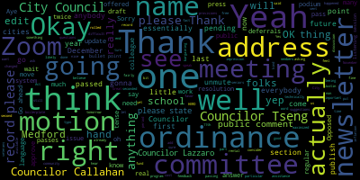
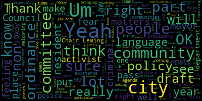
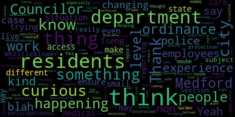

[Yanko]: 2, test 1, 2.
[Leming]: Justin. Justin. Councilor Tseng. Councilor Tseng, come on. Is it in a mode where everybody can just turn on their own, or do I need to approve it? Yeah. OK. Apparently not. I'm trying to figure out how to, okay, wait, what do I need to press before we start the meeting too? What? No, no. Okay. Can you move it so that I can see if it's green? All right, and. All right, now it's on. pull up the agenda real quick. Thank you. All right, I think we can get started. Welcome to the meeting of the Resident Services and Public Engagement Committee. I don't believe we need to take a roll call for attendance because nobody is on. Zoom right now. The first paper that we will be considering tonight is 23-055, offered by Councilor Tseng, a resolution to consider the welcoming city ordinance. This was actually, this was an ordinance that was actually offered in one of the predecessor committees last year by my colleague, essentially, It is an ordinance that officially codifies a policy of non-cooperation with federal authorities, specifically ICE on non-criminal matters. Prior to this, I requested feedback from both the school committee, because it does contain some provisions relevant to the Medford public school system, as well as Chief Buckley. I did hear some Some pieces of feedback from members of the school committee. So there were some concerns with the bargaining sessions, the bargaining sections with the police, as well as the potential enforceability within the Medford public school system. But essentially, most members of the school committee did approve the current draft that as it was written. There is one issue with the ordinance, which is that the section numbers I outlined in this draft, and I'm just gonna share my screen really quickly to show everybody, were actually conflict with the CCOPS ordinance that will be considered tomorrow. So I have here a, version of it where I changed the section titles to fit into the municipal code a little bit better. But other than that, I don't really see too many issues with it. I will go ahead and let Councilor Tseng speak on this, then my colleagues, if they would like to add anything, and then we can move on to a public comment period, if folks have anything to offer on it. Councilor Tseng, I'm going to turn your microphone on.
[Tseng]: Thank you. Um, this is an ordinance that, um, surrounding communities have passed. Um, and what exactly it is is it's a codification of our non-cooperation, um, uh, policy with federal authorities when it comes to, um, non-criminal immigration matters. We've seen, um, in years past, um, really difficult situations where cities are forced to upend people's human rights, people's sense of dignity, people's right to an existence in the city where they live. And a lot of communities at the time, feeling under attack, feeling endangered during the first Trump presidency, really wanted their local governments to protect their existence and their rights. While Medford didn't pass a welcoming city ordinance at the time, we did pass an executive order under Mayor Burke that we would not cooperate, that our policy as a city was not to cooperate with ICE on non-criminal matters. Now, I put this I introduced this agenda item, a few years ago, to the General City Council, because I wanted to quantify that that agreement to make sure that as we move forward into the future that our residents have faith that a mayor can't just take that away, and I'm not saying that this mayor will, I'm not saying that any person in particular will, but I know the fear is out there, having talked to friends who belong to the undocumented community here in Medford, which is such an integral part of our own community, that that fear is out there, that a lot of folks don't know that this policy even exists in the first place. And it's not something that they find read readily searchable. And when they look to see the laws of our city, they don't see it as a law. And This is our chance as a council, I think, to pass this, to codify it, to enshrine it as law, to make sure that they have that feeling of security, that we are able to announce as a city, that we are welcoming of all of our residents, that people don't have to have fear when they interact with people at City Hall. I know that this ordinance draft has been floating around the committee for a while. I'm very grateful to our activist community and to Chair Leming for bringing this back, for putting so much work into it. I know Chair Leming really put a lot of work into making sure we had the draft for this meeting. And I worked with him a little bit on that draft as well. But I know the activist community, our lawyers, especially in the activist community have helped us draft the multiple successive versions of this. Look, this I think for me is about fundamental human rights. Um, it's about making sure that our residents feel safe and a part of our community. I'm very happy to introduce it to the floor tonight I'm very grateful for a trail I mean for Acting on the prior motions, I think that this committee or the previous committee passed to reach out to the police chief and to reach out to the school committee and get feedback on the language. I'm really excited to see what we can get done on this because it is such an emergency at this point and because the challenges we face as a country in the next four years will be real and we'll have so much to deal with. on the municipal level, especially, and every part that we can do as early as possible to mitigate the negative impacts of the incoming presidency, I think will be very, very crucial and very, very important. So thank you for giving me this moment. Thank you for bringing this chair Leming to the committee.
[Leming]: Councilor Lazzaro.
[Lazzaro]: Thank you. Thank you, Councilor Tseng and Councilor Leming for bringing this forward. I'm very eager to work on this ordinance and I think there are a lot of situations that can make our residents in Medford nervous about things happening at the federal level. even some things that are happening at the state level. So when there are things that we can do at the local level to ensure the safety of our residents, I think we should absolutely take those steps. And this is a great example of how we can do that in a way that may feel small, but to many people, I think it's not a small thing. some experience with family members who have live in different states and have had experiences where they've been trying to access medical care and have had experiences where ice has been called. This isn't in Massachusetts. This is in Texas, and it's a very real situation. The more that we can do to ensure our residents that they are not going to be subject to that sort of danger when trying to access medical care, I think is really critical and our residents deserve that kind of assurance that they are safe in Medford. So thank you and I'm excited to get working on the specifics of this ordinance.
[Leming]: Thank you and I would also like to thank the many folks in the activist community who put pressure on the Medford City Council to get this in front of us today. I think it's a very particularly timely ordinance, much more so than we typically see in city council. So I'm excited to see it pass. We'll move on to public comment. So if you If anybody in the room has anything they'd like to say, either in person or on Zoom, please feel free to raise your hand on Zoom or line up at the podium. And we would love to hear you. Go ahead and press the thing. OK. Yep. Now I can. Name and address for the record, please.
[Yanko]: Okay, my name is Jennifer Yanko and I live at 16 Monument Street. I think this Welcoming Cities Ordinance is an opportunity for our city to show moral leadership in this very precarious time. We have been told that there are going to be massive deportations. Some of us have said, well, that's impossible. But I think we ought to take it seriously. Almost a quarter of our residents, our neighbors, are immigrants that weren't born in this country. And that puts a target on them. And I think it's important that we let our neighbors know that we have their backs. And another thing that I think is important is that we protect our people who are serving as police officers who might be conscripted to go around up their neighbors, something that may put them in a very serious moral bind. And I think that we should be thinking about them also. So I think there are a number of reasons to support this ordinance, and I urge you to do so. Thank you.
[Rotolo]: Thank you. Good evening, Chair and members of the committee. My name is Laura Rotolo. I live at 14 Rita Drive, and I'm here both as a proud Medford resident and representing the American Civil Liberties Union, where I work as field director, and our 3,700 members live here in Medford. And I just want to proudly support this ordinance and say just a few words that, of course, this is a very important moment for cities and towns to stand up on behalf of immigrants, no matter who you voted for, for the presidential election, we know that the incoming administration will focus on deportations from day one and that that will create chaos on a very local level. as we see families ripped apart and all sorts of chaos happening in our cities and towns. And so we are really looking to municipalities to be those firewalls right now. And at the ACLU, we've been working with cities and towns around the state for many years to pass ordinances like this one. Just last week, the City Council of Boston unanimously reaffirmed its Trust Act. Yesterday, the city of Cambridge did the same thing. And I'm very proud that this ordinance is being submitted today here. And I will also say that it is my understanding that the words in this ordinance are really just a codification of what is already a practice. Back in 2018, we had the executive order and an order from the police chief Sacco at the time that really taken side by side are almost identical. And I think it's important to know that this codification is just what's already a best practice. Medford does not help in deportation. won't assist immigration raids, won't assist immigration enforcement. That's really what's the best for our communities to focus our resources where they're mostly needed. And so I'm proud to support this ordinance and I'm here to answer any questions as we've been doing this in so many cities and towns and work with the committee. Thank you.
[Leming]: Hi. Name and address for the record, please.
[Zo]: I'm Maria Zo, Pilgrim Road, Medford. I'm here because I'm an immigrant. And actually, my grandmother came in 1906. And my family's been going back and forth from Italy to this country for many, many years. I actually lived out there in Italy and married Italian national. We've been married over 40 years. And during the last sort of The purge, whatever we want to call it whatever happened in this country in 2016, you know, we were like actually nervous about traveling. And, you know, we had friends that were like green card holding legal residents. being detained, and beyond the fact that, you know, our immigrants are our family members, our residents, our taxpayers, they work hard. You know, they were in our schools, you know, all the statistics, we could talk about all this. And I think Medford is a welcoming city. And I'm just grateful that you guys are putting it on. And we're going to stand behind our immigrants. Thank you.
[Leming]: Thank you. Name and address for the record, please.
[Zutter]: Jean Zutter. I'm at 36 Donner Street, Medford. I want to thank Councilors Sangs and Leming for working on this ordinance really fast. I remember when you came to Medford People Power like a year ago and wanted to codify this. And I appreciate City Council and this committee moving quickly on this ordinance. It's an unprecedented moment. And we need to move quickly before the new administration is in place. So I really appreciate that. As Laura said, this ordinance codifies what's already best practice in Medford. The Medford Police Department has this policy since 2018. What this policy, what the ordinance does is expands it to other departments, including the schools, protects our school children. So while the police department was following it, it's expanding it to other departments in the city. This ordinance restricts Medford from cooperating in mass deportations that have nothing to do with criminal behavior. It does not interfere with criminal laws. or judicial warrants. It only restricts cooperation with ICE on administrative detainers, and as Laura said, logistical support for raids, which is some of what the Trump administration has talked about using police for. We think this is urgent because in coming up to the presidential election, Trump has said he wants to deport the estimated 11 million undocumented immigrants that are in the United States. We don't know what this is going to look like on day one. like we don't know what a lot of things will look like with the new administration. We can look at the past Trump administration to have some sense of what that might be like. We know that under the past administration, 5,000 children who were citizen children were separated from their immigrant parents who were deported from the country. And 1,400 children are still without their parents and have never been able to be reunited. Most of the immigrants here are not criminals. They're working, and they have families. Often, they have citizen children. And so at that scale, the massive impact that it will have on families is going to be catastrophic. We don't know how or if there will be retaliation. I've heard one of the concerns is that maybe Medford would lose funding because of this. We don't know. There's a ton of legal challenges that could happen to this. I think Medford has to stand up and do what's right for Medford residents and not anticipate what would happen if that's how we operate. That's a slow sort of path to giving into that kind of, fear and not be in a safe community for immigrants. So it is a moral choice for Medford. It's one that I think we can all make to keep people safe. And I thank you so much for your time and acting on this quickly.
[Leming]: Thank you. Name and address for the record, please.
[Miller-Olapade]: My name is Reverend Wendy Miller Olapade. I live at 105 Brooks Street. And I stand here as an advocate for a beloved community, for making love and justice real in our very own city through our actions, our policies, and our laws. I stand here as the president of the Medford Interfaith Clergy Association, and as the mother of two whose father is an immigrant. I'm a proud resident of Medford and glad to be able to speak to you in support of this ordinance, primarily because I believe it's the right thing to do. Across our diverse social and faith traditions, one message resonates clearly the call to welcome, protect and uphold the dignity of all human beings, especially the stranger, the immigrant, and the marginalized. Becoming a welcoming city is not just an ordinance, it's a moral and spiritual imperative rooted in the shared values of all spiritual and faith traditions. And I'd like to just give you a taste of what those are, in my experience. In Christianity, the call to hospitality is unequivocal. The words of Jesus in the Gospel of Matthew are clear. I was a stranger and you welcomed me. These words remind us that how we treat the stranger is a reflection of how we honor the divine. Christians are taught to extend love and care, as Paul writes in Hebrews, do not neglect to show hospitality to strangers for by doing that, some have entertained angels unaware. In Judaism, the command to welcome the stranger is foundational. The Torah repeats it no fewer than 36 times, more than any other commandment. You shall love the stranger as yourself, for you were strangers in the land of Egypt. This teaching is not just about remembering history, but about cultivating empathy and justice in our communities today. It's a reminder that our humanity is bound together by shared vulnerabilities and aspirations. In Islam, the principles of hospitality and equity are deeply ingrained. The Quran commands believers to act with compassion and justice, to do good to parents, relatives, orphans, the needy, the neighbor who's near, the neighbor who's a stranger, and the traveler. The Prophet Muhammad, peace be upon him, emphasized that no one's faith is complete until their desire for their sibling, what they desire for themselves. This teaching urges us to ensure that everyone in our community feels safe, valued, and supported. In Buddhism, the practice of meta or loving kindness teaches us to extend compassion to all beings without distinction. The Buddha taught that just as a mother would protect her only child with her life. So to should one cultivate boundless love toward all human beings. This principle calls us to transcend fear and division, creating communities where everyone is treated with dignity and respect. These shared spiritual values call us to act in every moment with every law, with every policy, and in every interaction. Becoming a welcoming city aligns Medford with the highest aspirations of these traditions, to be a place where every resident, regardless of origin, is treated with dignity and is free to live without fear. It also reflects the very foundation of democracy and the history of America as a nation built on the ideals of equality, inclusion, and the belief that all people are created equal. This ordinance reflects the heart of all of our faith traditions and our shared humanity. It strengthens our community by affirming that all are valued, all are welcomed, and all deserve safety and respect. Let us live up to these sacred values and declare Medford a welcoming city. Thank you.
[Leming]: Thank you very much for those Thank you very much for your words. Wendy, I see one hand on zoom. Mister Matthew page Lieberman, I'm asking you to unmute please state your name and address for the record, please.
[Page-Lieberman]: Yeah, my name is Matthew Page Lieberman. I live in 15 Canal Street. I very much appreciate everybody who's brought this forward, both the legislators and the activists. I think this should be supported for some of the reasons that were brought up previously by some of our council members. The state of it right now is it's effectively provisional as it can be left up to the discernment for as long as they wish to, you know, maintain that it's at the police department, you're living up to the discernment of a police department. And as far as Mayor Burke's previous executive order, yeah, I've lived here for 17, 18 years, I was not aware of that. I think it's much, much better for the community to understand that this is a Law that it's absolutely on the books. We don't want to have perhaps you know immigrants saying, yeah, the state, the city doesn't have some of the books, but I've heard that the police will not Turn you into ice. That's not a good situation. I have some personal experience, although some of this may be no longer relevant today, you know, about a decade ago, my best friend was deported for a traffic infraction. It was pretty painful. There's a lot of terror that's involved in this kind of stuff, trying to get a box of his belongings to a detention center in the middle of the state and not being able to give it to him, like his glasses that are broken, a pair of sneakers. So then he was brought back to Brazil, who actually have some shoes on his feet. And, you know, I had to eventually go to some, walk out to some actual place to actually, fortunate enough that somebody was kind enough to accept the box, to give a box of his belongings, so it would be okay. That was under the Obama administration. There was a, this is not the kind of situation we want people, even though the undocumented today can get driver's licenses. We still do not want to have any kind of situation where immigrants in any way feel that they have to flee, whereas they may be even coded as undocumented immigrants that have to flee because perhaps it's not the thing about a driver's license, perhaps it'd be something else. I have another, I'm recalling that also during the Obama administration, there was a situation where people are bringing up the situation of women who have been in a trigger warning sexually assaulted, who are afraid to come forward to speak to the authorities because of their immigration status. And there's a particular senator still actually in the State House who said, well, they should be scared. They should feel scared if they're undocumented. This, if we maintain it, whereas kind of, well, on the discretion of the police department and stuff like this, we definitely leave this kind of open to this situation where people may not be aware that that's a police decision. They might not know if the police department may change their mind. We don't know the kind of pressure that an incoming mayor will be in or a police department will be in by the federal state, especially under this guy under this ridiculous name of quote unquote borders are in the threats that he is making against communities around this country. So yeah, we want, you know, when people are people are scared, they're terrorized, if they're victims, if they have information about any crimes, we want them to feel comfortable going to anybody in this community to report what they know, whether it's the police department, whether it's people in the school committee or the school, any kind of administration, we want to create that absolutely safe and welcoming environment so people that have decided to live here can feel free to collaborate and, you know, because since this is this kind of criminal thing that's being engaged, we want people to be able to come forward also. and testify and say without fear that they or their family members can be deported because of the kinds of threats. We're also in this state with the governor as well has made a particular decree and the state house, there's a question of, well, can they be convinced to go back and go into formal session within this month or early next year to do something? It's necessary that this is legislatively passed and not just up to, you know, kind of discretion of what people are here or there. So those are my positions, and I'm really glad that everybody has brought this forward. Thank you very much.
[Leming]: Thank you. I see one more at the podium. Eileen, can you name and address for the record, please?
[Lerner]: My name is Eileen Lerner, and I live at 3920 Mystic Valley Parkway. For 20 years, I taught adult immigrants English. The last 15 were at the YMCA International Learning Center on Huntington Avenue. During those 15 years, I met some of the finest people in the world. What they bring to our country is so needed. an incredible amount of optimism. That was the biggest thing I saw, that all of the immigrants who came to the United States were optimistic that they could make a better life. And I think that optimism fueled their value of family and work. Some of them worked like three jobs, three jobs to make it, you know? And they were just amazing people. I love meeting immigrants. What they bring to our country is just beyond my capacity to explain to you. I also stand here in the shadow of the Holocaust. And I'm so afraid now for others to be hunted like we were hunted. We Jewish people, we Jewish people who value the stranger. I was brought up with that value to value the stranger. And I was also told, you have to pay attention. You have to know what's going on because you have to know when you have to flee. And I know that, the immigrants, particularly the undocumented immigrants are feeling that same thing. And I just want to tell you that when I was teaching, almost every class was half documented and half undocumented. So there are so many people here that are undocumented. What does that mean? That means they don't have papers. They don't have papers. They need papers. They need to be citizens. They're paying taxes. People say, oh, they don't pay taxes. They surely pay taxes and they don't get social security. They pay taxes. They contribute to our city, our state, our country. How can we possibly consider letting them go? And where are our workers gonna come from? I mean, I've had several hip replacement, knee replacement. Who takes care of older people in those kinds of situation? Immigrants. Immigrants take care of old people. Immigrants, they are the ones who care. They're the ones who are going to people's homes, you know, with home nursing services or, yeah, they just are incredibly valuable. And I can't imagine not having them in our city. And I commend everyone who worked on the welcoming ordinance, and I hope that the city council will pass it. Thank you.
[Leming]: Thank you. Seeing no one else at the podium, and oh, one more hand on Zoom. Penelope Taylor gonna ask you to unmute and please state your name and address for the record.
[Taylor]: Great, thank you. Penny Taylor, 29 Martin Street, number one. I just want to thank you for taking it up and express my support. Impossible act to follow, but thank you for taking up this important issue.
[Leming]: Thank you. Seeing one additional hand on Zoom. Muneer Germanis, can I ask you to unmute and please state your name and address for the record, please?
[Germanis]: My name is Muneer Germanis. I live at 3 Summit Road. My wife and I are both immigrants and have lived in Bedford for over 40 years. I'm a previous member and past chair of the Human Rights Commission who had actually worked on a similar project with the previous chief of police. And as has already been said, we already have a policy that does not waste the time of the police work with ICE to deport immigrants. Immigrants have become an integral part of our society, and we are, I, for one, feel at home, and I would really hear in Medford, and I would be devastated if I were to get a notice that, hey, You're an immigrant. You don't belong here. Get out of here. I mean, this is not only the morally correct thing to do, but in the judgment of most businesses, it is the right thing to do. We are already seeing examples of businesses that are closing down because their immigrant workers are scared just of the rhetoric of this coming administration. So once again, I urge you to pass this ordinance as soon as possible and make Medford a safe place to live in. Thank you.
[Leming]: Thank you. All right, looking for any other public comments. Going once, going twice, and oh, Mike Denton on Zoom. Please state you're asking you to unmute. Please state your name and address for the record.
[Denton]: My name is Mike Denton. I live at Bellevue Terrace in Medford. There's so much wonderful stuff that has been said, so I would like to just echo the sentiments of many by saying, one, thank you for taking this up. And as an immigrant in and Medford resident, I would like to also say thank you to everyone for bringing this up. There's a couple of quick thoughts that I wanted to share were one, there's a tricky thing in this discussion where so much of the discussion is about immigrants as other people. And the thing that I wanted to say is that immigrants are us. And just to echo a lot of the sentiments that have been made here, this is an opportunity for us to stand up and say, this is who we would like to be in Medford or as Medford. And I wholeheartedly agree that it's the morally right thing to do. And I just wanted to briefly comment on some practical components to this, where there are so many, there's so many aspects to the way that it would amount to, if we're talking about police officers getting recruited, it would mean police officers being taken away from the job of public safety that we aim for them to do, especially since this whole discussion is about deporting non-criminal people who are living and contributing to our society. And then beyond the police department any other department or aspect of the city that has to be involved, that means that it's taking resources away from Medford becoming better. And I think that one thing we all have in common is that we would like Medford to be an ever better place for us to live. And we would like to have a greater sense of community. I think there are some huge practical economic impacts that this potential project of mass deportations will have that we're not paying attention to that will have a real impact on Medford. I can tell you one simple example. As a business owner in Medford, the community of members at my gym, I've already encountered two people who have quietly expressed that they are afraid that they may have to leave. And from a purely selfish standpoint, if those wonderful humans leave the country because they're afraid or get rounded up in some sort of a indiscriminate raid, then I lose money. And these incredibly decent humans are now living in fear of having their lives upturned when there's no need for that. So started to ramble a little bit there. Thanks for doing this. Keep it moving forward. Thanks. Yes, officially my thumbs up of support.
[Leming]: Thank you. All right. Last few Zoom hands have been very last minute. So going once, going twice and public comment is closed. Councilor Lazzaro.
[Lazzaro]: I appreciate all the comments we've been hearing. I have an incredibly prosaic note that there is a typo. Section 5083F employees is misspelled. I just noticed when I was reading through it. Whistleblower protections. There's just an extra A. I did also have some thoughts about the reporting requirements for the police department. I'm just curious about how easy or difficult that might be for the department. If it's a non-participation, non-compliance, then it may be unnecessary to report out what they're not doing. I'm curious about how how that works, or if we can maybe, I'd be curious to hear.
[Leming]: Can you point out the word first that was misspelled?
[Lazzaro]: Employees. It's whistleblower protection subject to the blah, blah, blah. It's the second line down. It says any city employees with an AS. Do you see it?
[Leming]: Oh, yep, yep, yep. I see it.
[Lazzaro]: Defined in section 185. I gotcha.
[Leming]: OK. All right. I have my little copy right there. And for legal questions, I know we did bring Miss Rodolo. Is she still here? Just this is our representative from who works with the ACLU who agreed to come along to answer any of the more nitty gritty questions about the by the ordinance draft. Sorry, can you can you repeat?
[Lazzaro]: Yeah, maybe Councilor Tseng even did you draft it? Yes. Um, okay.
[Hurtubise]: Okay.
[Lazzaro]: Yeah, especially because just because it says every six months and especially if it's ah, I'm just I am curious about how we would have how their department would have records if it's something that's non participation.
[Tseng]: I believe that in that case. Okay. Um, I believe in that case. Um, The, the police department can just tell us they don't they don't have a request or anything to give more context about the reporting parts of this. the reporting and the complaints enforcement part of this ordinance, a lot of the language is taken straight from the CCOPS ordinance and is language that the police department themselves have already dealt with. So nothing should be completely new to the department. Nothing should be things that they haven't experienced or haven't done before.
[Leming]: Yeah. My impression in speaking with folks at Medford People Power is that this is all fairly boilerplate language that has been replicated in other cities as well. Did you have anything?
[Lazzaro]: Thank you, Chair. The only reason I, I would just, I thought it was a very, the last speaker made about how when our police department is focusing on things that are not, you know. Helping our residents, then it's taking time and energy away from helping our residents. So and I wouldn't want to ask our police department to be doing things that's outside of the realm of their responsibilities. That being said, I do realize like and we'll be talking about this tomorrow because we're making some edits to the C cups ordinance and. But that reporting requirement is already, you know, something that's happening in that committee. And often it's like the report is there is no update. That's fine, too. So it's not, you know, a ridiculous ask. So I just wanted to make sure we weren't, you know, without realizing it, putting too much on the plates of different departments in the city.
[Leming]: Okay. Yeah, I think I think a report of There is no update is also fine as well. But noted. Councilor Callahan.
[Callahan]: Thank you. Yeah, this ordinance seems very thorough. I do appreciate all the work that has been put in, both by the former administration of police chief, as well as by the activists, by Councilor Tseng, and everyone else who was involved. The one thing I noticed as I read through it is it is very thorough. It has a lot of details. things that as a person who is not an expert in police ICE integration, you know, I am not an expert in whether these things are boilerplate or not. So my main question is just, and I would love to hear either from Councilor Tseng or from the ACLU, just about whether there are details in here that are Medford specific, if these are pretty standard boilerplate that have been passed in other cities. And then my final question would simply be to ask if this has been run by KP Law or if that's maybe our next step, just to see sort of what the next, in terms of the legalese, because I don't, being not super expert on this, there are lots and lots of details in here that I have not had a chance to research each one individually.
[Leming]: Yeah. So I could answer one part of that. I have been told nicer, and I did a little bit of research on similar ordinances that have been passed in other cities at this point. Yes, the language is fairly boilerplate. I did pass this by the mayor, who then referred it to KP Law. So I think that any and My impression with that is that any specific legalese or whichever could very likely and pretty easily be dealt with in a regular meeting. So yeah. But in terms of the context for other cities, I would like to let Laura here speak about that. Go ahead and press the button.
[Taylor]: Just wait for it.
[Leming]: I'm sorry. It's a new system.
[Rotolo]: Thank you, Councilor Callahan, and I can answer that question. And just to be clear, I am a lawyer, but I'm not the city's lawyer, so I'm not here on behalf of the city. What I can say is that this language, very similar language, has been passed in many cities around the state and around the country. And the premise of this is that cooperation with immigration is wholly voluntary. It has to be wholly voluntary under the 10th Amendment to the US Constitution. The federal government cannot force localities to do the work of the federal government. And so this is all based on what is voluntary collaboration and the choices that cities make. And it also very closely tracks the language that's already in the police order. So none of this is brand new. It is what I believe is still the protocols and the practice of the police department. So it's things like not collecting, not asking about immigration status when you stop a person, you know, that is best practice around the state. And, you know, it's wholly legal. It's, you know, it's everywhere around the country and not keeping information you don't need to keep and not volunteering resources where you don't need to volunteer those resources. And it's also very similar to other cities who have recently affirmed, just like Cambridge and Boston.
[Leming]: Thank you. Thank you. Does that answer all your? Great. OK. Any other comments? Do we have a motion on the floor? Councilor Tang?
[Tseng]: I would motion to refer this to the City Council and to accept the edits that you have with the section numbers.
[Leming]: Yes, as well as the edit so kindly pointed out by my colleague about the small typo. And that edit as well. Thank you. There's always something. On the motion to refer this to regular council pending the section edits and the typo, all those in favor? Aye. No. No one's on the same, so we could just do it. It doesn't have to be rolled. It does not have to be rolled.
[Hurtubise]: You can choose to do one, but you're not
[Leming]: All opposed? Motion passes. Thank you, everybody. So, this... So, we'll be taking this up at a future regular meeting of the City Council. We'll likely have more discussions there, but it's out of committee. Now, for the real reason everybody's here, we're gonna edit the newsletter. I know that y'all been waiting so patiently. Come on, come on. We're gonna go out of order. I just wanna get this done.
[Hurtubise]: Okay, I'm gonna really quickly.
[Leming]: One moment, City Council newsletters.
[Hurtubise]: Okie dokie. Going to share my screen. All right. All right.
[Leming]: 2, 4, 3, 5, 4, the resolution to publish this city council newsletter. I'd like to thank Councilor Tseng for drafting this particular issue of the newsletter. We had, and do apologize that it was only sent out in the, wait, Why that's there. That was only sent out in the middle of the day, but essentially the only real difference between this newsletter and previous ones is that they're first there is some. There is some tentative language on it, which we did last time, like keeping the future tense as well as the past tense and just kind of letting me edit that later when we go into review. And there's also a nice little point by point breakdown because this is the end of year newsletter. the holiday edition of the most significant accomplishments of city council this year, which would be something nice to discuss as to whether we want to do that. Bye. Thank you all for showing. Yeah. So essentially, the first bullet point goes over the override The second discusses progress on zoning. The third bullet point talks about the establishment of the stabilization funds. Then the policies to fund the affordable housing trust as well as tax deferrals and the proposed rental assistance program for veterans, communications methods, wildlife feeding ordinance, and the solid waste ordinance, and the leaf blower ordinance, environmental, as well as the upcoming work on the charter committee. Councilor Callahan, if you can Yep, Councilor Callahan.
[Callahan]: Just a super quick question. Did we this year maximize tax deferrals for seniors? I thought that had already been done in the past.
[Leming]: I believe that's referring to the HERO Act one.
[Tseng]: Perhaps a better thing, what we did this year was we tied them to state mechanisms to make sure that they're like tied to the cost of living. Yeah, we can specify that. Okay. Yeah.
[Leming]: Yeah, I think I think I put it broadly because I think we re maximize it for seniors, and then we did the time for that that's, that's a really tricky one but I had an in depth discussion with the with Tim cost with Ted cost and about that. We so technically passing one of the provisions of the Hero Act that we did pass was actually redundant. And so it didn't like it didn't add up to. So if we hadn't already maximized deferrals for seniors, it would have maximized them itself. But because we already had done that, it's like it didn't really, he said that there was some utility and actually passing it because then we could go on like a list of cities that had passed it and Yeah, but he said, but the more important one was the fact that we tied it was the fact that we end up tying it to inflation to an inflation. So the deferrals would go up every year. And I think that's, that's, that's the important part.
[Callahan]: Leave it as it's too confusing. Like, we don't need the super hyper detailed. Yeah, I was.
[Tseng]: Yeah, that was that was the internal debate in my mind. Thanks. Yeah, I'm very happy to go.
[Leming]: Yeah, I am also disinclined from like putting out a very detailed legislative explanation of consumer price indexes and whatnot. But I think it, I think it captures
[Callahan]: It's like, let's just have like a footnote or something like that.
[Leming]: Yeah, it's it is it is a good thing that it was passed. Okay. And I guess my other thing is that some of these are sort of what we will do future work, the veterans rental assistance program is not technically passed yet. But I mean, I think it's fine. We have been working on these things. And I would say that these are the main bullet points. And then the normal, the kind of general business of what actually happened in December is here as well. So yeah, pending the tenses here, Does anybody have any particular suggestions about things that should be changed? Councilor Callahan.
[Callahan]: Thanks. I am super happy if we want to do these because maybe these are even more interesting to some people than other things, but like the Bedford Donuts Cafe, the Demets Donuts, the Buns House. That might actually be really interesting to people. I thought we were not including them, but I'm happy if we want to.
[Tseng]: Yeah, that was another conversation I had in my mind, because I saw that a lot of people online were talking about these two places in particular, and when I was going through the agenda, I was just thinking, okay, well, this might be a good place to get the word out. I think we can also just exercise our own discretion when it comes to it.
[Leming]: Councilor Lazzaro.
[Lazzaro]: I would say that when it seems like something is changing hands, but staying pretty much the same, it seems less interesting to our residents. But when it's something that's like changing over, like, I mean, I was a huge Chili Garden fan, love Chili Garden, very sad that they are changing hands, but interested to see what Buns House turns out to be. I think that like, people are very interested in the businesses that open up in Medford because it changes the kind of cultural landscape of our city. So I do think that we should be kind of exploring, I think that's a way that the work of city council really translates directly into people's lives. So I think we should be like, I think we should be including that stuff. When it Yeah, but I think you're right, like case by case. In this case, I think we should include it.
[Leming]: I'm just deleting these spaces after the periods of the document. Councilor, feel free to just keep your mics on. Okay, great.
[Tseng]: Well, since we're already on the resident services one, I would just suggest policy of non-cooperation with ICE on non-criminal matters. I guess that's an important caveat to put in. And then we, I didn't write language about sending it to, referring it out of committee, just because I didn't want to be too tentative. But maybe we can add in a sentence there. Met, met, or yeah. Oh yeah, yeah, that would be great. And then the other suggestion or the other kind of question I had for you all was on governance, which we also just held. I left a comment, I just left a comment that we defined what the charter review process was in a previous newsletter. I just realized that some folks might not see that and might not have seen that newsletter before. Should we just copy and paste it back in here? Yeah, or yeah. We link it? OK. OK. Explained, maybe?
[Leming]: So wait.
[Tseng]: OK.
[Leming]: Or in our, maybe, was it November? Was it the November's newsletter?
[Tseng]: Yeah, it's in, oh, is it October? They're online. I forget which one it is. I like to be specific. I'm pretty sure it was the November one. OK. But we can also let you. We can approve pending on clerical changes. Yes. OK.
[Leming]: OK.
[Tseng]: Sounds good.
[Leming]: Anybody else have any suggestions?
[Hurtubise]: Do we have a... Do we have any... A little gift for everyone who opens it.
[Leming]: That would be too difficult. That'd be too difficult to format in LaTeX. Sorry.
[Tseng]: You can't do that in LaTeX?
[Leming]: No, it's really hard. motion to accept and publish the newsletter is motion to Publish the Proven publish the newsletter pending. Uh, the events of December 11th because I think there is one. Yeah, December. Yeah, two committee meetings pending the December 11th many meetings and to receive and place on
[Lazzaro]: Yes. And I'm sorry.
[Leming]: On the motion by Councilor Bizarro, seconded by Councilor Callahan. All those approve? Aye. Opposed? Motion passes. And finally, okay, so that won't be going out until tomorrow because we still have the future to consider those committee meetings haven't actually happened yet. Okay, lastly, 24-073 offered by Councilors Callahan, Sangam, Lazzaro, resolution to establish a City Council listening session. So this is just a opportunity, if any of us have anything, to update folks about listening sessions. City Councilor Callahan.
[Callahan]: Yeah, just a little update, which is that the session that was supposed to be on the 7th got postponed, so that's going to be in January. January the, do you remember the date? I can look it up. The 4th or something, and because we changed the date, weren't sure if you could make it, but we just want to make sure there's going to be a second City Council.
[Hurtubise]: Yeah, so. Just looking for the actual date right now.
[Callahan]: Yeah, it is going to be the 4th at 1030, which is a Saturday, January 4th. So if you're available, great. If you're not available, then chair Leming, if you don't mind helping us to make sure that somebody can make
[Leming]: Okay, just the rescheduled West Medford Community Center listening session.
[Callahan]: And our community liaison, Stacey Moore, will be helping with outreach for that. But it's great. I think the West Medford, we rescheduled because they misunderstood who was doing outreach for it. And then once we were like, no, actually, it should be the venue that does outreach, and they said, We're going to do it in January, which gives us enough time to fill the room. So we can expect there to be 20 or more people, which I think is going to be probably our largest so far, which will be very exciting.
[Leming]: All right. Sounds good. Thank you. I'll look into scheduling that and making sure folks are available for it. I know I personally won't be available on the 4th, but I'm sure that somebody will be. Any other updates? Councilor Lazzaro.
[Lazzaro]: Motion to adjourn.
[Leming]: Before, do we have anybody who wants to say anything publicly? Any public comment? Going once, going twice. On the motion to adjourn by Councilor Lazzaro, do we have a second? Seconded by Councilor Tseng. All those in favor? Aye. Opposed? Motion passes. Meeting is adjourned.
|
total time: 17.38 minutes total words: 2019  |
total time: 7.5 minutes total words: 1081  |
total time: 4.87 minutes total words: 726  |
total time: 2.94 minutes total words: 523 |
{kind=link}
{kind=link}
{kind=link}
{kind=link}